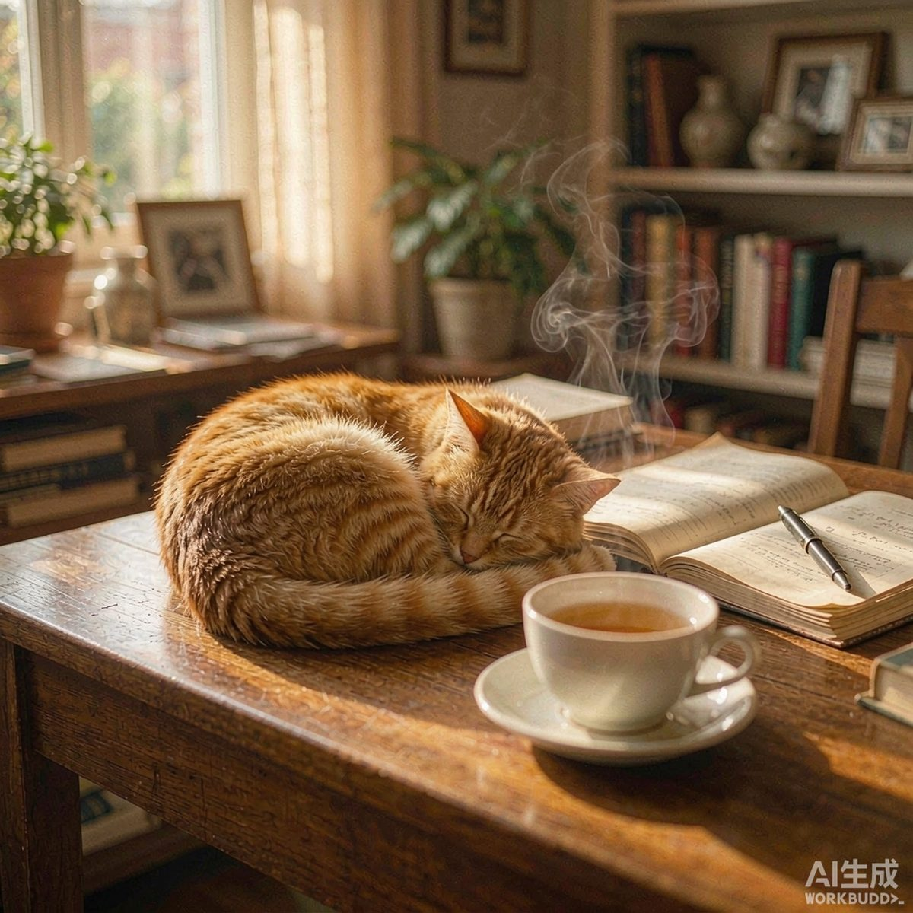
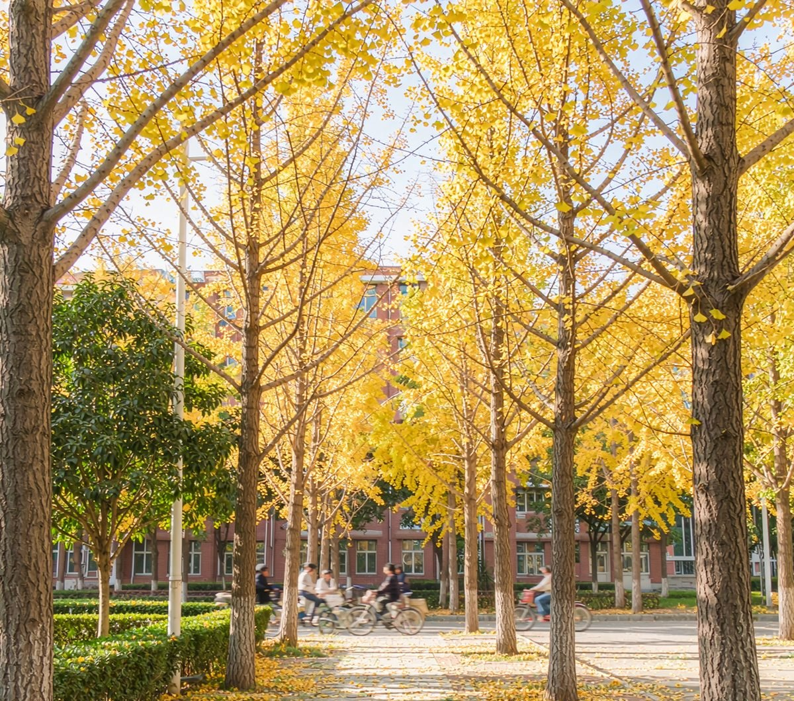
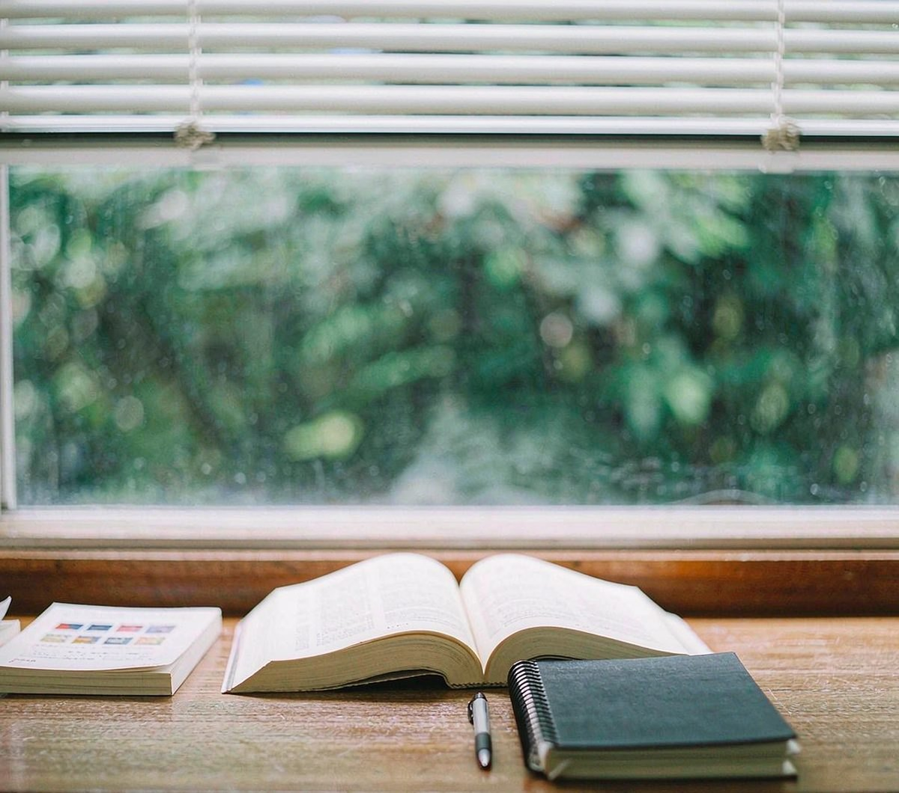
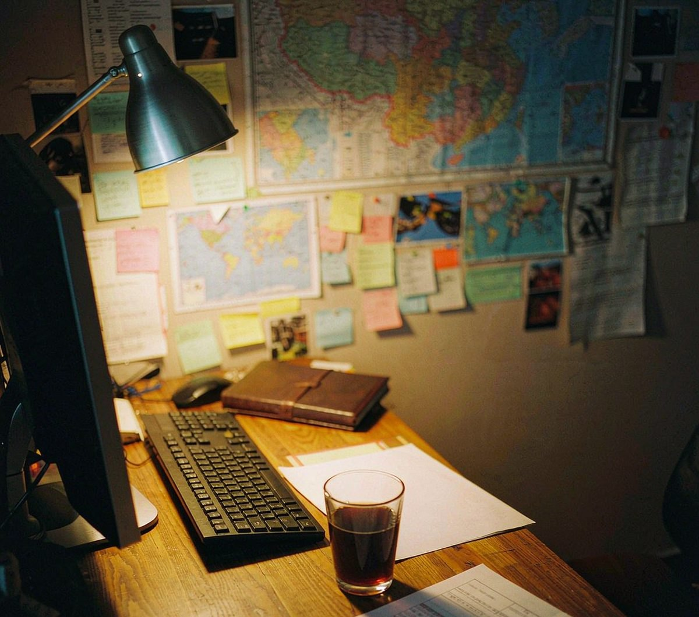
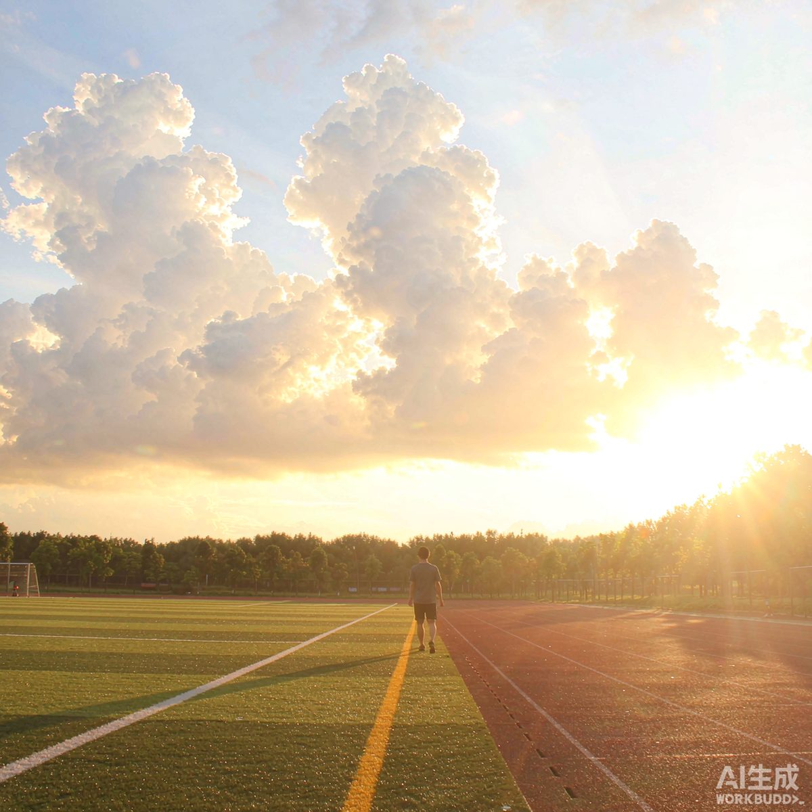
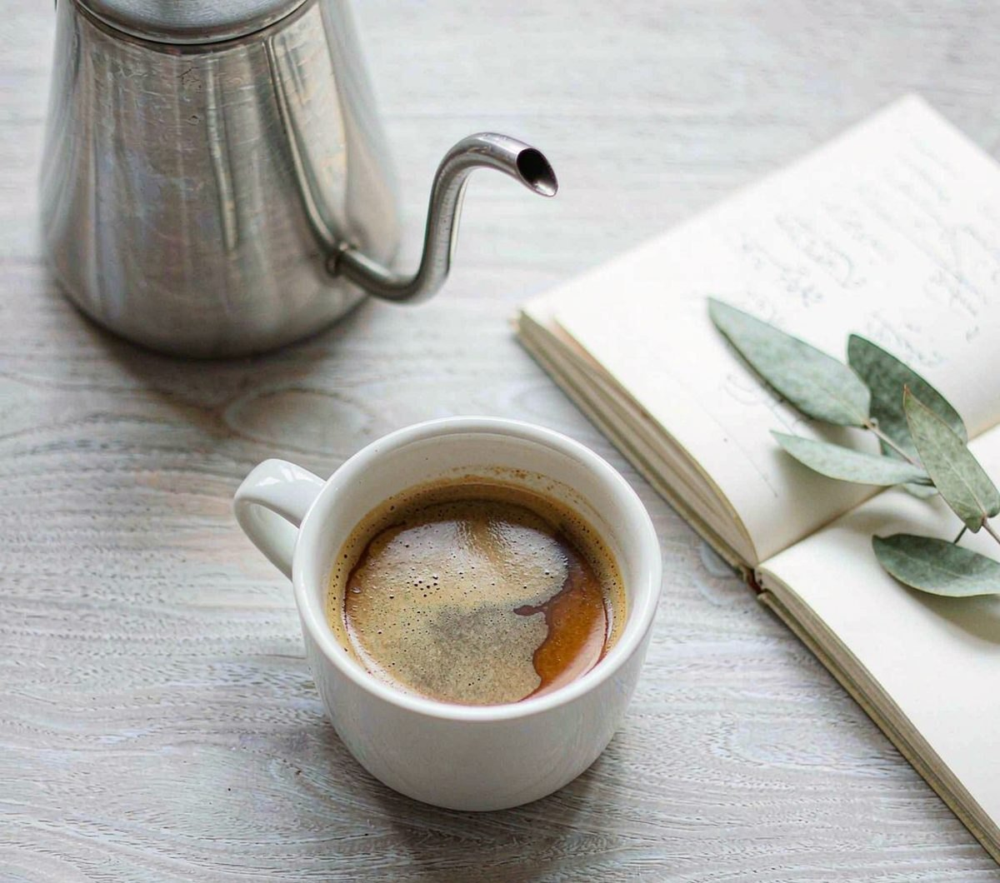

我的相册
这一册不按时间排序，按心情排序。六张照片，六种“今天还不错”的理由。
六个瞬间
Six Moments





拍照这件事
Notes我不用什么昂贵的器材，一部手机、一点耐心就够了。真正难的不是参数，而是停下来： 在一堆待办事项中间，愿意为一片云、一只打哈欠的猫停留三十秒。
相册里的照片几乎都没有滤镜。我更喜欢原本的光——下午四点的斜阳、教室窗户的冷白、 台灯那种偏黄但很安心的暖。它们各自代表了一天里的某个时刻，而时刻本身就有颜色。
“摄影教会我的，不是怎么拍得更好看，
而是怎么更认真地看。”
而是怎么更认真地看。”